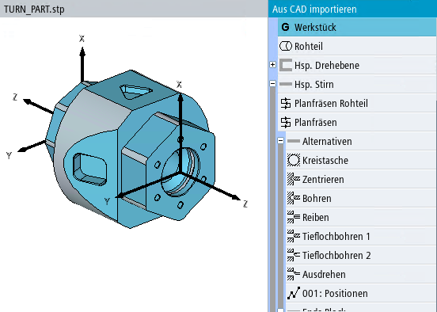

In der Maske "Aus CAD importieren" werden gleichzeitig das 3D-Modell des Werkstücks und die vorgeschlagenen Bearbeitungsschritte angezeigt.
Im folgenden Beispiel wird ein Werkstück auf einer Drehmaschine mit Gegenspindel bearbeitet:
Der Inhalt der Liste der Bearbeitungsschritte ist von der eingestellten Technologie, vom Werkstück und Werkstücknullpunkt abhängig. Der angewählte Bearbeitungsschritt wird im 3D-Modell hervorgehoben.
Bearbeitungsschritte, die zur Erzeugung derselben Form verwendet werden können, werden unter "Alternativen" zusammengefasst.
Wenn die Drehmaschine mit einer Gegenspindel ausgestattet ist, kann eine Grenze eingegeben werden, nach der die Bearbeitungsschritte auf Hauptspindel und Gegenspindel verteilt werden. Diese Grenze kann getrennt für Innen- und Außenbearbeitung eingegeben werden.
Wenn die Drehmaschine über keine Gegenspindel verfügt, wird alles auf der Hauptspindel bearbeitet.
Die folgende Liste enthält alle wichtigen Bearbeitungsschritte:
Bearbeitungsschritt "Werkstück"
Jede Bearbeitungsschrittliste beginnt mit einem Schritt "Werkstück". In diesem Schritt kann der Nullpunkt für die Haupt- und (falls vorhanden) Gegenspindel festgelegt werden.
Zusätzlich können Sie in diesem Schritt manuell eine Ebene hinzufügen, um z. B. eine Kontur in dieser Ebene zu erstellen.
Bearbeitungsschritt "Hauptspindel Rohteil"
Im Bearbeitungsschritt "Hauptspindel Rohteil" können Sie Abmessungen des Rohteils direkt als Rohteilschritt in ein G-Code-Programm übernehmen (getrennt für Haupt- und Gegenspindel).
Bei einem ShopTurn-Programm wird das Rohteil in den Programmkopf geschrieben.
Vor der Übernahme können Sie die Werte anpassen, um z. B. ein Rohteilaufmaß zu realisieren.
| Hinweis |
In der Auswahlliste "Rohteil" können Sie zwischen den verfügbaren Rohteilen umschalten und das passende Rohteil auswählen. Die Werte werden passend für alle Rohteile bereitgestellt. |
Block "Hauptspindel Drehebene"
Im Block "Hauptspindel Drehebene" können Sie die Kontur des 3D-Modells anzeigen und mit der rechten Maustaste durch verschiedene Positionen und Ebenen rotieren. Hier werden alle Drehbearbeitungen der Hauptspindel aufgeführt. Dazu gehören die Kontur, bezogen auf den Nullpunkt der Hauptspindel, und ggf. Einstiche, die ihren Bezugspunkt im Bereich der Hauptspindel haben.
Block "Hauptspindel Stirn" vorne/hinten
Im Block "Hauptspindel Stirn" werden alle Fräsbearbeitungen für die Stirnseite angeboten.
Block "Hauptspindel: Mantel"
Unter "Hauptspindel: Mantel" werden alle Fräsbearbeitungen auf der Mantelfläche aufgeführt, deren Orientierung nach außen zeigt. Für jede Position auf dem Mantel wird ein eigener Block angelegt. Der Winkel gibt die Rotation der Hauptspindel an.
Block "Hauptspindel Mantel" innen
Unter "Hauptspindel: Mantel" werden alle Fräsbearbeitungen auf der Mantelfläche aufgeführt, deren Orientierung nach innen zeigt. Für jede Position auf dem Mantel wird ein eigener Block angelegt. Der Winkel gibt die Rotation der Hauptspindel an.
Block "Hauptspindel Ebene"
Unter "Hauptspindel Ebene" werden alle anderen Fräsbearbeitungen der Hauptspindel für schräge Ebene aufgeführt (nur an Drehmaschinen mit B-Achse).
Bearbeitungsschritt "Gegenspindel Rohteil"
Im Bearbeitungsschritt "Gegenspindel Rohteil" können Sie Abmessungen des Rohteils direkt als Rohteilschritt in ein G-Code-Programm übernehmen (getrennt für Haupt- und Gegenspindel).
Bei einem ShopTurn-Programm wird das Rohteil in den Programmkopf geschrieben.
Vor der Übernahme können Sie die Werte anpassen, um z. B. ein Rohteilaufmaß zu realisieren.
Block "Gegenspindel Drehebene"
Im Block "Gegenspindel: Drehebene“ werden alle Drehbearbeitungen der Gegenspindel aufgeführt. Dazu gehören die Kontur, bezogen auf den Nullpunkt der Gegenspindel und ggf. Einstiche, die ihren Bezugspunkt im Bereich der Gegenspindel haben.
Block "Gegenspindel Stirn"
Im Block "Gegenspindel Stirn" werden alle alle Fräsbearbeitungen auf der Gegenspindel für die Stirnseite angeboten, deren Orientierung nach vorne ausgerichtet ist.
Block "Gegenspindel Stirn" hinten
Im Block "Gegenspindel Stirn" werden alle alle Fräsbearbeitungen auf der Gegenspindel für die Stirnseite angeboten, deren Orientierung nach hinten ausgerichtet ist.
Block "Gegenspindel Mantel"
Im Block "Gegenspindel: Mantel" werden alle Fräsbearbeitungen auf der Mantelfläche aufgeführt, deren Orientierung nach außen ausgerichtet ist. Für jede Position auf dem Mantel wird ein eigener Block angelegt. Der Winkel gibt die Rotation der Gegenspindel an.
Block "Gegenspindel Mantel" innen
Im Block "Gegenspindel: Mantel" innen werden alle Fräsbearbeitungen auf der Mantelfläche aufgeführt, deren Orientierung nach innen ausgerichtet ist. Für jede Position auf dem Mantel wird ein eigener Block angelegt. Der Winkel gibt die Rotation der Gegenspindel an.
Block "Gegenspindel Ebene"
Im Block "Gegenspindel Ebene" wird der Drehpunkt für Schwenken Ebene festgelegt.
Auf Schwenkmaschinen werden die Formen zusätzlich auf Ebenen verteilt. Für jede Ebene wird ein eigener Block angelegt.
| Hinweis |
Die Bearbeitungsebene Stirn entspricht der X/Y-Ebene (G17). Die Bearbeitungsebene Mantel entspricht der Y/Z-Ebene (G19). |